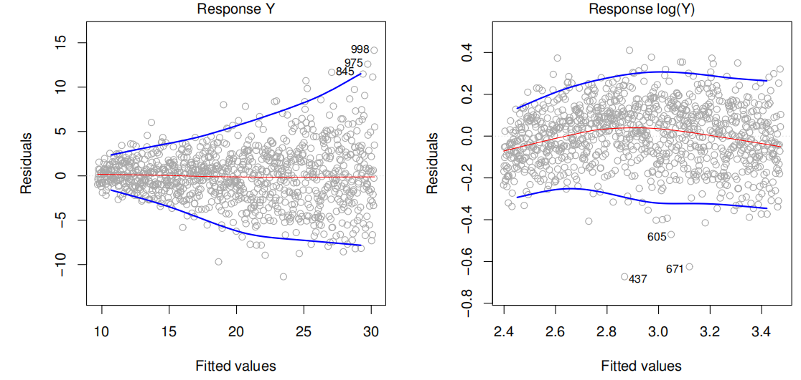
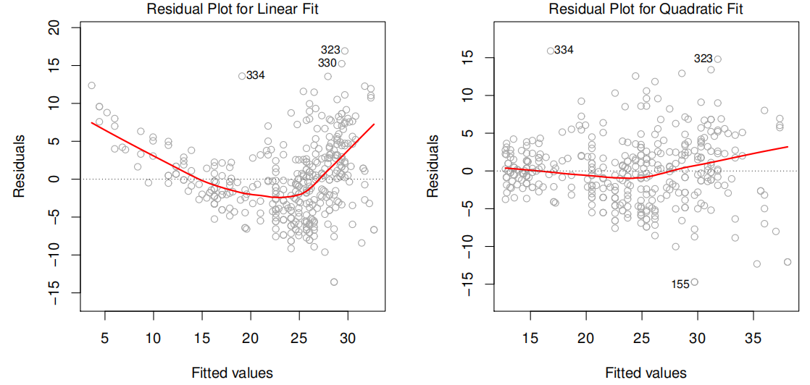
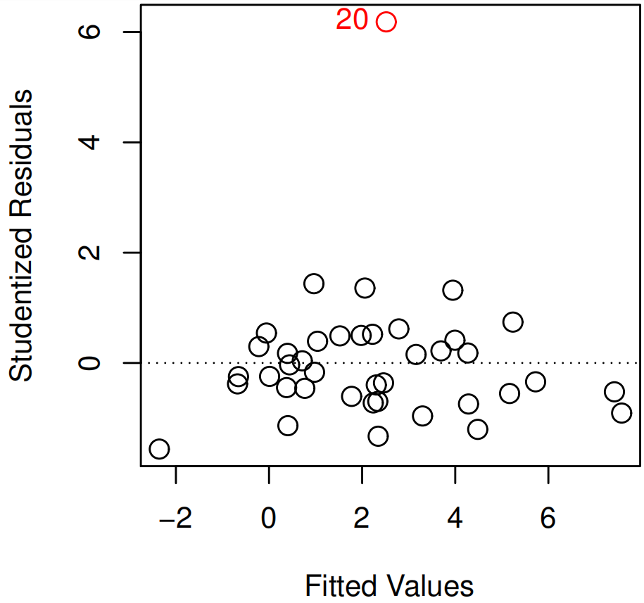
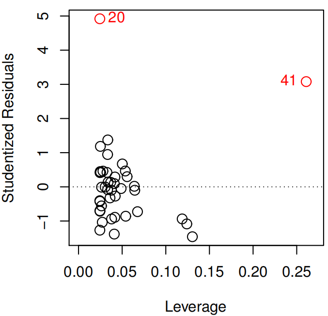
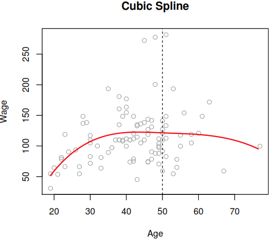
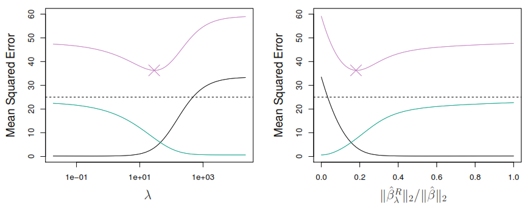
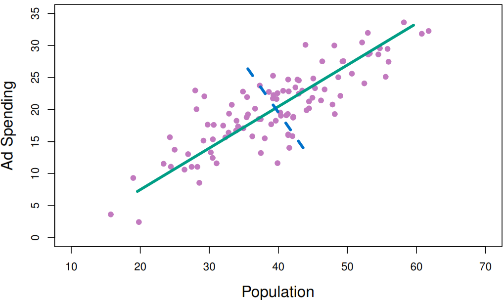
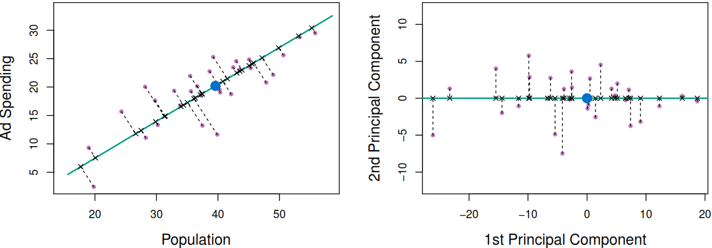
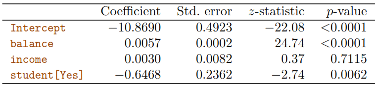

To estimate the population regression line we can calculate confidence intervals for sample coefficients, to define a range where we can find the population values with a defined confidence level.
If we want to use 95% of confidence we need to know that after taking many samples only 95% of the intervals produced with this confident level would have the true value (parameter).
To generate confident intervals we would need to calculate the variance of the random error.
\[
\sigma^2 = Var(\epsilon)
\]
But as we can not calculate that variance an alternative can be to estimate it based on residuals if they meet the next conditions:
Each residual have common variance \(\sigma^2\), so the variances of the error terms shouldn’t have any relation with the value of the response.
Residuals are uncorrelated. For example, if \(\epsilon_{i}\) is positive, that provides little or no information about the sign of \(\epsilon_{i+1}\).
If not, we would end underestimating the true standard errors, reducing the probability a given confident level to contain the true value of the parameter and underrating the p-values associated with the model.
Confirm the relationship between the Response and Predictors
Use the regression overall P-value (based on the F-statistic) to confirm that at least one predictor is related with the Response and avoid interpretative problems associated with the number of observations (n) or predictors (p).
\[
H_{a}: \text{at least one } \beta_{j} \text{ is non-zero}
\]
Accuracy of the model (relationship strength)
If we want to know how well the model fits to the data we have two options:
Residual standard error (RSE): Even if the model were correct, the actual values of \(\hat{y}\) would differ from the true regression line by approximately this units, on average. To get the percentage error we can calculate \(RSE/\overline{x}\)
The \(R^2\) statistic: The proportion of variance explained by taking as a reference the total sum of squares (TSS).
In this case, F-statistic reports the partial effect of adding a extra variable to the model (the order matters) to apply a variable selection technique. The classical approach is to:
Fit a model for each variable combination \(2^p\).
Select the best model based on Mallow’s Cp, Akaike information criterion (AIC), Bayesian information criterion (BIC), and adjusted\(R^2\) or plot various model outputs, such as the residuals, in order to search for patterns.
But just think that if we have \(p = 30\) we will have \(2^{30} = =1,073,741,824\ models\) to fit, that it’s too much. Some alternative approaches for this task:
Forward selection
Backward selection (cannot be used if p >n)
Mixed selection
Size of association between each predictor and the response.
To check that we need to see the \(\hat{\beta}_{j}\)confident intervals as the real \(\beta_{j}\) is in that range.
Predicting future values
If we want to predict the average response \(f(X)\) we can use the confident intervals, but if we want to predict an individual response \(Y = f(X) + \epsilon\) we need to use prediction intervals as they account for the uncertainty associated with \(\epsilon\), the irreducible error.
5.1.4 Standard linear regression model assumptions
The additivity assumption means that the association between a predictor \(X_{j}\) and the response \(Y\) does not depend on the values of the other predictors, as it happens when there is a interaction (synergy) effect
The linearity assumption states that the change in the response Y associated with a one-unit change in \(X_{j}\) is constant, regardless of the value of \(X_{j}\).
Including an interaction term
This approach relax the additivity assumption that models usually have.
2 quantitative variables
It consist in adding an extra coefficient which multiplies two or more variables.
After adding the interaction term we could interpret the change as making one of the original coefficient a function of the another variable. Now we could say that \(\beta_{3}\)represent the change of\(X_{1}\)effectiveness associated with a one-unit increase in\(X_{2}\).
It very important that we keep hierarchical principle, which states that if we include an interaction in a model, we should also include the main effects, even if the p-values associated with their coefficients are not significant as it would alter the meaning of the interaction.
1 quantitative and 1 qualitative variable
If \(X_{1}\) is quantitative and \(X_{2}\) is qualitative:
Plotting the residual and checking the plot creates a funnel shape, demonstrating a non-constant variance (heteroscedasticity) of error terms.

To solve this problem we can apply transformations to the target variable.
Applying a concave function such as \(\log{Y}\) or \(\sqrt{Y}\). If the target value has 0s we can define the argument offset as 1.
ames_recipe<-recipe(Sale_Price~., data =ames_train)%>%step_log(all_outcomes(), offset =0)
Applying Box Cox transformation is more flexible than the log transformation and will find an appropriate transformation from a family of power transforms that will transform the variable as close as possible to a normal distribution. Its lambda (\(\lambda\)) value varies from -5 to 5 and it’s selected based on the traning data.
If your data consists of values \(y \leq 1\) use the Yeo-Johnson transformation, which is very similar to the Box-Cox one.
ames_recipe<-recipe(Sale_Price~., data =ames_train)%>%step_YeoJohnson(all_outcomes())
To make correct interpretations of our predictions it’s important to remember that we need to revert this transformation after getting the prediction.
This actions will reduce the relative error of each prediction.
Collinearity
Collinearity refers to the situation in which two or more predictor variables are closely related (highly correlated) to one another. It reduces the accuracy of the estimates of the regression coefficients and causes the standard error for \(\hat{\beta}_{j}\) to grow. That reduce the power of the hypothesis test,that is, the probability of correctly detecting a non-zero coefficient.
Looking at the correlation matrix of the predictors could be usefull, but it is possible for collinearity to exist between three or more variables even if no pair of variables has a particularly high correlation (multicollinearity).
Detection method
Solutions
The best way to assess multicollinearity is to compute the variance inflation factor (VIF), which is the ratio of the variance of \(\hat{\beta}_{j}\) when fitting the full model divided by the variance of \(\hat{\beta}_{j}\) if fit on its own with 1 as its lowest value and 5 or 10 as problematic values of collinearity
1. Drop one of the problematic variables from the regression. 2. Combine the collinear variables together into a single predictor
Where \(R_{X_{j}|X_{-j}}^2\) is the \(R^2\) from a regression of \(X_{j}\) onto all of the other predictors.
Non-linearity of the response-predictor relationships
Detection method
Solutions
Plot the residuals versus predicted values\(\hat{y}_{i}\). Ideally, the residual plot will show no discernible pattern. The presence of a pattern may indicate a problem with some aspect of the linear model.
A simple approach is to use non-linear transformations of the predictors, such as \(\log{X}\), \(\sqrt{X}\), and \(X^2\), in the regression model

Correlation of error terms
If there is correlation among the errors, then the estimated standard errors of the coefficients will be biased leading to prediction intervals being narrower than they should be.
Detection method
Solutions
1. Plot the residuals from our model as a function of time or execution order. If the errors are uncorrelated, then there should be no discernible pattern. 2. Check if some observation have been exposed to the same environmental factors
Good experimental design is crucial in order to mitigate these problems
Outliers
An outlier is a point for which \(y_{i}\) is far from the value predicted by the model. Sometimes, they have little effect on the least squares line, but over estimate the RSE making bigger p-values of the model and under estimate the\(R^2\).
Detection method
Solutions
Plot the studentized residuals, computed by dividing each residual \(e_{i}\) by its estimated standard error. Then search for points which absolute value is greater than 3
They can be removed if it has occurred due to an error in data collection. Otherwise, they may indicate a deficiency with the model, such as a missing predictor.

High-leverage points
Observations with high leverage have an unusual value for \(x_{i}\). High leverage observations tend to have a sizable impact on the estimated regression line and any problems with these points may invalidate the entire fit.
Detection method
Solutions
Compute the leverage statistic. Find an observation with higher value than mean, represented by \((p + 1)/n\). Leverage values are always between \(1/n\) and \(1\)
Make sure that the value is correct and not a data collection problem
In a multiple linear regression, it is possible to have an observation that is well within the range of each individual predictor’s values, but that is unusual in terms of the full set of predictors.

5.1.6 Avoid using for classification problems
There are better model to achieve that kind of situation. For example, he linear discriminant analysis (LDA) procedure the same response of a linear regression for a binary problem. Other reasons are:
A regression method cannot accommodate a qualitative response with more than two classes.
A regression method will not provide meaningful estimates of \(Pr(Y|X)\) as some of our estimates might be outside the [0, 1] interval.
5.1.7 Benefits of Replacing plain least squares fitting
Prediction Accuracy: If n is not much larger than p, then there can be a lot of variability in the least squares fit, resulting in overfitting and consequently poor predictions on future observations not used in model training. And if p >n, then there is no longer a unique least squares coefficient estimate: the variance is infinite so the method cannot be used at all. As an alternative, We could reduce the variance by increasing in bias (constraining and shrinking).
Model Interpretability:There are some methods that can exclude irrelevant variables from a multiple regression model (feature selection or variable selection).
5.1.8 Coding example
To perform Linear Regression we just need to create the model specification by using lm engine.
library(ISLR2)library(tidymodels)set.seed(123)BikeshareSpit<-initial_split(Bikeshare)lm_spec<-linear_reg()%>%set_mode("regression")%>%set_engine("lm")lm_rec_spec<-recipe(bikers~mnth+hr+workingday+temp+weathersit, data =Bikeshare)%>%step_dummy(all_nominal_predictors())workflow()%>%add_model(lm_spec)%>%add_recipe(lm_rec_spec)%>%last_fit(split =BikeshareSpit)%>%collect_metrics()
# A tibble: 2 × 4
.metric .estimator .estimate .config
<chr> <chr> <dbl> <chr>
1 rmse standard 76.1 Preprocessor1_Model1
2 rsq standard 0.671 Preprocessor1_Model1
5.2 Extending Linear Regression (Data Transformations)
5.2.1 Polynomial regression
It extends the linear model by adding extra predictors, obtained by raising each of the original predictors to a power.
As result, if the response is a numeric variable we can fit our model to follow the next form:
They cut the range of a variable into K distinct regions (known as bins) in order to produce a qualitative variable. This has the effect of fitting a piecewise constant function.
If we define the cutpoints as \(c_1, c_2, \dots, c_K\) in the range of X, we can create dummy variables to represent each range. For example, if \(c_1 \leq x_i < c_2\) is TRUE then \(C_1(x_i) = 1\) and then we need to repeat that process for each value of \(X\) and range. As result we can fit a lineal regression based on the new variables.
It consist in fitting separate low-degree polynomials over different regions of X. For example, a piecewise cubic polynomial with a single knot at a point c takes the form.
As each polynomial has four parameters, we are using a total of 8 degrees of freedom in fitting that model. By using that model with Wagedata, we can see a problem as the model used was too flexible and to solve it we need to constrain it to be continuous at age = 50.
But as you could see after applying the continuity constraint the plot still present an unnatural V-shape that can solve by apply the continuity constraint to the first and second derivative of the function, the end with 5 degrees of freedom model.

In this context, a natural spline refers to a regression spline with the additional constraints of maintaining linearity at the boundaries.
5.3 Subset Selection
This approach involves identifying a subset of the p predictors that we believe to be related to the response. We then fit a model using least squares on the reduced set of variables.
5.3.1 Best Subset Selection
It fits all p models that contain exactly one predictor, all \(\left( \begin{array}{c} p \\ 2 \end{array} \right) = p (p-1)/2\) models that contain exactly two predictors, and so forth. Then it selects the best model based on smallest RSS or the largest \(R^2\).
Algorithm 6.1
Let \(\mathcal{M}_0\) denote the null model, which represent the sample mean for each observation.
For \(k = 1, 2, \dots, p\):
Fit all \(\left( \begin{array}{c} p \\ k \end{array} \right)\) models that contain exactly k predictors.
Pick the best among these \(\left( \begin{array}{c} p \\ k \end{array} \right)\) models using the smallest RSS or the deviance for classification (negative two times the maximized log-likelihood), and call it \(\mathcal{M}_k\)
Select a single best model from among \(\mathcal{M}_0, \dots, \mathcal{M}_p\) using cross- validated prediction error, \(C_p\) (AIC), BIC or adjusted \(R^2\).
This method is really computational expensive as it needs to fit \(2^p\) models. Just think that if your data has 20 predicts, then there are over one million possibilities. Thus an enormous search space can also lead to overfitting and high variance of the coefficient estimates.
It begins with a model containing no predictors, and then adds the predictors who gives the greatest additional improvement to the fit, one-at-a-time, until all of the predictors are in the model, as result we will need to fit \(1+p(p+1)/2\) models.
Algorithm 6.2
Let \(\mathcal{M}_0\) denote the null model, which represent the sample mean for each observation.
For \(k = 0, \dots, p-1\):
Consider all \(p-k\) models that augment the predictors in \(\mathcal{M}_k\) with one additional predictor.
Choose the best among these \(p-k\) models, and call it \(\mathcal{M}_{k+1}\). Here best is defined as having smallest RSS.
Select a single best model from among \(\mathcal{M}_k, \dots, \mathcal{M}_p\) using cross- validated prediction error, \(C_p\) (AIC), BIC or adjusted \(R^2\).
Though it tends to do well in practice, it is not guaranteed to find the best possible model out of all \(2^p\) models containing subsets of the p predictors, but can be used even if \(n < p\).
It begins with the full least squares model containing all p predictors, and then iteratively removes the least useful predictor, one-at-a-time. As result we will need to fit \(1+p(p+1)/2\) models
Algorithm 6.3
Let \(\mathcal{M}_p\) denote the full model, which contains all p predictors.
For \(k = p, p -1, \dots , 1\):
Consider all k models that contain all but one of the predictors in \(\mathcal{M}_k\), for a total of \(k-1\) predictors.
Choose the best among these k models, and call it \(\mathcal{M}_{k-1}\). Here best is defined as having smallest RSS.
Select a single best model from among \(\mathcal{M}_0, \dots, \mathcal{M}_p\) using cross- validated prediction error, \(C_p\) (AIC), BIC or adjusted \(R^2\).
This method don’t guarantee to yield the best model containing a subset of the p predictors and we need to cofirm that \(n \geq p\).
5.3.4 Stepwise Selection: Hybrid Approaches
In this method variables adds variables sequentially, but after adding each new variable, the method may also remove any variables that no longer provide an improvement in the model fit. Such an approach attempts to more closely mimic Best Subset Selection while retaining the computational advantages of forward and backward stepwise selection.
5.3.5 Choosing the Optimal Model
As the model which contains all of the predictors will always have the smallest RSS, we need to estimate the test error rate by:
Making an adjustment to the training error to account for the bias due to overfitting.
Using either a validation set approach or a cross-validation approach.
Let’s see the methods that relay on correcting the training error:
\(2d\hat{\sigma}^2\) represent the penalty of adding new predictors. This method is a good estimation of test MSE if the \(\hat{\sigma}^2\) is an unbiased estimate of the \(\sigma^2\)
The book omits irrelevant constants to show that \(C_p\) and \(\text{AIC}\) are proportional to each other
Bayesian information criterion
\(\text{BIC} = \frac{1}{n}(\text{RSS} +\log(n) d \hat{\sigma}^2)\)
After omitting irrelevant constants, we can see that \(\log n > 2\) for any \(n > 7\), as consequence, the metric trends to add a heavier penalty on models with many variables than the \(C_p\) and tent to select models with fewer predictors
Adjusted \(R^2\)
\(\text{Adjusted} \; R^2 = 1 - \frac{\text{RSS}/(n - d -1)}{\text{TSS}/(n-1)}\)
A large value of adjusted \(R^2\) indicates a model with a small test error, even though the metric doesn’t rely on rigorous theoretical justifications.
Where:
\(n\): Number of observations
\(d\): Number of predictors
\(\hat{\sigma}^2\): Estimate of the variance of the error \(\epsilon\) associated with each response
5.4 Shrinkage
This approach involves fitting a model involving all p predictors and shrinks the estimated coefficients towards zero. Depending on what type of shrinkage is performed, some of the coefficients may be estimated exactly at zero, performing some variable selection.
5.4.1 Ridge Regression
The method rather than using RSS as the metric to minimize with the regression coefficient \(\beta_0, \beta_1, \dots, \beta_p\), it is modified by adding a shrinkage penalty that the effect of estimating \(\beta_j\) towards zero when the coefficient is close to 0:
\[
RSS + \lambda \sum_{j=1}^p \beta_j^2
\]
Where:
\(\lambda\): It’s a tuning parameter \(\geq 0\) that can be calculated using cross-validation.
\(\text{RSS}\): Present the residual standard error.
As result, the ridge regression will produce a different set of coefficient estimates for each \(\lambda\) value, \(\hat{\beta}_\lambda^R\). By plotting the new coefficients against the penalty used we can see how the coefficients move towards zero without reaching the absolute 0, but may also be useful to plot the \(\ell_2 \; \mathcal{norm}\) (\(\| \beta \|_2 = \sqrt{\sum_{j=1}^p \beta^2}\)) proportion of the ridge vs least squares coefficients, to compute the proportion in which the ridge regression coefficient estimate have been shrunken towards zero.
As the \(\lambda\) to select is sensible to the predictors scaling, it’s a good practice scaling the predictors using the next formula, to make all the predictors to have an standard deviation of 1:
When the number of variables p is almost as large as the number of observations n the least squares estimates will be extremely variable and this method increase the bias by reducing the flexibility through \(\lambda\) to reduce the variance and find the lower error rate, without making many computations as happens the best subset selection method.

5.4.2 Lasso Regression
Ridge Regression don’t set the coefficient exactly to zero (unless \(\lambda = \infty\)). That doesn’t affect the model accuracy but doesn’t provide any help when we have to interpret a model with many predicts. To over come that problem, the Lasso Regression performs variable selection based on minimization of the next function:
\[
RSS + \lambda \sum_{j=1}^p |\beta_j|
\]
Where:
\(\lambda\): It’s a tuning parameter \(\geq 0\) that can be calculated using cross-validation.
\(\text{RSS}\): Present the residual standard error.
As consequence, the method uses the \(\ell_1\) penalty (\(\| \beta \|_1 = \sum_{j=1}^p |\beta|\)), instead of the \(\ell_2\).
5.4.3 Coding example
To perform a Ridge or Lasso regression we need to use the function linear_reg and define the mixture argument depending on the regression we want to perform.
Model
Mixture
Ridge Regression
mixture = 0
Lasso Regression
mixture = 1
As both regression depend on the penalty parameter we need to use cross-validation to estimate the best one. But, if you want to explore the parameter by yourself you has the next options.
Fit a model and explore different penalties using tidy, augment, predict or autoplot functions.
Hitters<-as_tibble(Hitters)%>%filter(!is.na(Salary))ridge_fit<-linear_reg(mixture =0, penalty =0)%>%set_mode("regression")%>%set_engine("glmnet")%>%fit(Salary~., data =Hitters)tidy(ridge_fit, penalty =11498)
ridge_recipe<-recipe(formula =Salary~., data =Hitters_train)%>%step_novel(all_nominal_predictors())%>%step_dummy(all_nominal_predictors())%>%step_zv(all_predictors())%>%step_normalize(all_predictors())ridge_spec<-linear_reg(penalty =tune(), mixture =0)%>%set_mode("regression")%>%set_engine("glmnet")ridge_workflow<-workflow()%>%add_recipe(ridge_recipe)%>%add_model(ridge_spec)
Use cross-validation to estimate the testing error and tune the penalty.
set.seed(40)Hitters_fold<-vfold_cv(Hitters_train, v =10)
Define the penalties to check. Where the range indicates the limit of \(x\) in the function \(10^x\) and the level the number of step to complete the range.
This method projects the \(p\) predictors into an \(M\)-dimensional subspace. If \(Z_1, Z_2, \dots, Z_M\) represent \(M < p\) lineal combinations \(Z_m = \sum_{j=1}^p \phi_{jm}X_j\) of ALL our original predictors based on some constants \(\phi_{1m}, \phi_{2m}, \dots, \phi_{pm}\), then we can use the new variables to fit a linear regression model by least squares.
This is not a feature selection method as each of the M principal components used in the regression is a linear combination of all p of the original features.In this sense, PCR is more closely related to ridge regression than to the lasso.
To select the \(\phi_{jm}\)’s we will discuss two different ways:
5.5.1 Principal Components Regression (PCR)
The PCR assumes that the directions in which\(X_1, \dots, X_M\)show the most variation are the directions that are associated with\(Y\). If it’s that is true then fitting the model to \(Z_1, \dots, Z_m\) will lead better results than using the original variables \(X_1, \dots, X_p\)
To perform a principal components analysis (PCA):
It’s recommended to standardize each predictor to have the same scale.
Select as the first principal component the variable where the data vary the most.

Project the observations on the first component, to get the largest possible variance

Then maximize the \(\text{Var}(\phi_{11} \times (x_1-\overline{x_1}) + \phi_{21} \times (x_2-\overline{x_2}))\) where \(\phi_{11}^2 + \phi_{21}^2 = 1\) to the get the principal component loadings. As result \(Z_1\) it’s a weighted average of the to variables.
Repeat the process until having p distinct principal components perpendicular to the previews one.
In general, this method performs better when we just need to use few principal components.
The number of principal components, M, is typically chosen by cross-validation.
5.5.2 Partial Least Squares (PLS)
The PLS approach attempts to find directions that help explain both the response and the predictors by placing the highest weight on the variables that are most strongly related to the response.
Compute the first direction \(Z_1\) by setting each \(\phi_{j1}\) equal to the coefficient from the simple linear regression of \(Y \sim X_j\), which it’s also proportional to the correlation.
Adjust each of the variables for \(Z_1\), by regressing each variable on \(Z_1\) and taking residuals.
Compute \(Z_2\) using this orthogonalized data (residuals) in exactly the same fashion as \(Z_1\) was computed based on the original data and repete the process \(M\) times.
Use least squares to fit a linear model to predict \(Y\) using \(Z_1, \dots, Z_M\)
To select the number \(M\) we can use cross-validation.
5.5.3 PCR vs PLS
The next figure illustrates how each method work.
The next figure illustrates that the first two PCs when using - PCR: Has very little relationship to the response variable. - PLS: Has a much stronger association to the response variable.
Performance Note
In practice, it often performs no better than ridge regression or PCR. While the supervised dimension reduction of PLS can reduce bias, it also has the potential to increase variance, so that the overall benefit of PLS relative to PCR is a wash.
5.5.4 Coding example
To run a PCR or a PLS we just need to set a lineal model.
Where: - \(\lambda\) must be greater than 0. It represents the expected number of events \(E(Y)\) and variance related \(Var(Y)\) - \(k\) represent the number of events that we want to evaluate base of \(\lambda\). Its numbers should be greater or equal to 0.
So, it makes sense that the value that we want to predict with our regression would be \(\lambda\), by using next structure:
If select this model we need to be aware how to interpret the coefficients. For example, if \(\beta_1 = -0.08\) for a categorical variable, we can conclude by calculating \(e^{-0.08}\) that 92.31% of events of the base line related to \(\beta_0\) would happen.
5.6.1 Coding example
To perform Poisson Regression we just need to create the model specification by loading the poissonreg package and using glm engine.
# A tibble: 2 × 4
.metric .estimator .estimate .config
<chr> <chr> <dbl> <chr>
1 rmse standard 69.7 Preprocessor1_Model1
2 rsq standard 0.725 Preprocessor1_Model1
5.7 Logistic Regression
It models the probability (\(p(X) = Pr(Y=1|X)\)) that Y belongs to a particular category given some predictors by assuming that \(Y\) follows a Bernoulli Distribution. This model calculates the probability using the logistic function which produce a S form between 0 and 1:
As the functions returns probabilities is responsibility of the analyst to define a threshold to make classifications.
5.7.1 Estimating coefficients
To estimate \(\hat{\beta}_{0}\) and \(\hat{\beta}_{1}\) the method used is called as maximum likelihood which consists in maximizing the likelihood function. It is important to clarify that the least squares approach is in fact a special case of maximum likelihood.
To understand how each variable influence the probability \(p(X)\), we need to manipulate the logistic function until having a lineal combination on the right site.
As we can see, the result of the linear combination is the \(\log\) of the odds ratio, known as log odd or logit.
An odds ratio of an event presents the likelihood that the event will occur as a proportion of the likelihood that the event won’t occur. It can take any value between \(0\) and \(\infty\), where low probabilities are close to \(0\), higher to \(\infty\) and equivalents ones are equals to 1. For example, if we have an \(\text{odds ratio} = 2\), we can say that it’s 2 times more likely that the event happens rather than not.
Applying \(\log{(\text{odds ratio})}\) makes easier to compare the effect of variables as values below 1 become negative numbers of the scale of possible numbers and 1 becomes 0 for non-significant ones. To have an idea, an odds ratio of 2 has the same effect as 0.5, which it’s hard to see at first hand, but if we apply the \(\log\) to each value we can see that \(\log{(2)} = 0.69\) and \(\log{(0.5)} = -0.69\).
At end, \(p(X)\) will increase as \(X\) increases if \(\beta_{1}\) is positive despite the relationship between each other isn’t a linear one.
Understanding a confounding paradox
Simple Regression
Multiple Regression

The positive coefficient for student indicates that for over all values of balance and income, a student is more likely to default than a non-student.
The negative coefficient for student indicates that for a fixed value of balance and income, a student is less likely to default than a non-student.
The problem relays on the fact that student and balance are correlated. In consequence, a student is riskier than a non-student if no information about the student’s credit card balance is available. However, that student is less risky than a non-student with the same credit card balance!
Multinomial Logistic Regression
We also can generalize the logistic function to support more than 2 categories (\(K > 2\)) by defining by convention the last category \(K\) as a baseline.
\[
Pr(Y = K|X= x) = \frac{1}
{1+\sum_{l=1}^{K-1}e^{\beta_{l0}+\beta_{l1}x_{1}+\dots+\beta_{lp}x_{p}}}
\] And after some manipulations we can show that \(\log\) of the probability of getting \(k\) divided by the probability of the baseline is equivalent to a linear combinations of the functions parameters.
In consequence, each coefficient represent a measure of how much change the probability from the baseline probability.
5.7.4 Model limitatios
There are models that could make better classifications when:
There is a substantial separation between the \(Y\) classes.
The predictors \(X\) are approximately normal in each class and the sample size is small.
When the decision boundary is not lineal.
5.7.5 Coding example
To perform Logistic Regression we just need to create the model specification by loading the discrim package and using MASS engine.
Smarket_train<-Smarket%>%filter(Year!=2005)Smarket_test<-Smarket%>%filter(Year==2005)lr_spec<-logistic_reg()%>%set_engine("glm")%>%set_mode("classification")SmarketLrPredictions<-lr_spec%>%fit(Direction~Lag1+Lag2, data =Smarket_train)|>augment(new_data =Smarket_test)conf_mat(SmarketLrPredictions, truth =Direction, estimate =.pred_class)
Truth
Prediction Down Up
Down 35 35
Up 76 106
accuracy(SmarketLrPredictions, truth =Direction, estimate =.pred_class)
They provide a general framework for extending a standard linear model by allowing non-linear functions of each of the variables, while maintaining additivity.
To transform each predictor we have the next options:
A constant for each categorical level (step function)
Polynomial regression
Natural spines (optimized with least squares)
Smoothing splines (optimized with backfitting)
Local regression
Backfitting fits a model involving multiple predictors by repeatedly updating the fit for each predictor in turn, holding the others fixed.
Pros
Cons
1. It finds relationships that a lineal model would miss without applying many transformations as it can fit a non-linear \(f_j\) to each \(X_j\)
2. We can examine the effect of each predictor on \(Y\) individually as the model is additive.
3. The smoothness of each function \(f_j\) can be summarized via degrees of freedom.
1. Important interactions can be missed, but they can be added manually
5.8.1 GAM Regression
To predict a numeric variable this method creates a function with the next form:
By taking the other predictor as constant we can plot effect of each function for each predictor in the Wage example:
5.8.3 Coding example
The mgcv package supports the next families based on the outcome variable type.
Gaussian (Default): Regular regression
Binomial: Probabilities
Poisson/Quasipoisson: counts
library(tidymodels)library(mgcv)load("data/Soybean.RData")gam_fitted<-gen_additive_mod(mode ="regression")|>set_engine(engine ="mgcv", family =gaussian)|>fit(weight~s(Time), data =soybean_train)augment(gam_fitted, new_data =soybean_train)|>ggplot(aes(Time, weight))+geom_point()+geom_line(aes(y =.pred), color ="blue", linewidth =1)+theme_light()

 But as you could see after applying the continuity constraint the plot still present an unnatural V-shape that can solve by apply the continuity constraint to the first and second derivative of the function, the end with 5 degrees of freedom model.
But as you could see after applying the continuity constraint the plot still present an unnatural V-shape that can solve by apply the continuity constraint to the first and second derivative of the function, the end with 5 degrees of freedom model.